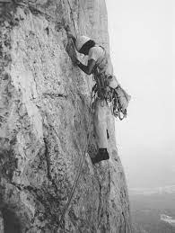
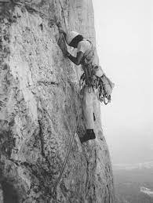

indice
- home
- gli ottomila
- biografia
|
Gli ottomila
Versante Rupal del Nanga Parbat
A proposito delle sue scalate alla fine degli anni sessanta, Messner scrive nel libro Sopravvissuto:
«Nel 1969 riuscii a superare in solitaria la via più impegnativa delle Alpi Orientali, l'allora famigerato diedro Philipp-Flamm al Civetta, durante una bufera. Scalai da solo e in libera anche la parete ritenuta allora la più difficile delle Alpi Occidentali, la Nord delle Droites. A quel punto le Alpi mi erano divenute strette. Non era presunzione; era invece la brama di ampliare sempre più i miei confini, era la curiosità di un uomo ancora giovane e sotto molti aspetti inesperto. Fino a dove sarei stato capace di spingermi?»
Nel 1970 Reinhold Messner viene invitato insieme al fratello Günther a partecipare alla spedizione al Nanga Parbat (8126 m) diretta da Karl Maria Herrligkoffer. L'obiettivo della spedizione era salire l'allora inviolato versante Rupal della montagna. Si trattava di una spedizione pesante, nella quale era previsto abbondante uso di corde fisse e ausili tecnologici, secondo lo stile dell'epoca. Il 27 giugno Messner si trovava col fratello Günther e con Gerhard Baur al campo V, l'ultimo campo. Avendo ricevuto notizia che il tempo sarebbe peggiorato il giorno successivo, era stato deciso che in questo caso sarebbe partito da solo dal campo senza usare corde fisse, sperando così di raggiungere velocemente la vetta prima della fine del bel tempo.
Nel frattempo Gerhard Baur e Günther avrebbero attrezzato il canalone Merkl con 200 metri di corda, per facilitare la discesa. Invece Reinhold venne raggiunto dopo 4 ore dal fratello Günther, che aveva deciso di seguirlo di propria iniziativa. Gerhard Baur era tornato indietro a causa di un mal di gola che gli impediva la respirazione. I due raggiunsero la vetta nel tardo pomeriggio. Si trattava della terza salita di questa montagna. Essendo ormai il tramonto, però, non essendo in grado di ridiscendere per la via di salita, perché non era stata attrezzata e perché non si erano portati dietro le corde necessarie per affrontarla, i due furono costretti ad un bivacco d'emergenza. Il giorno successivo decisero di scendere per il versante Diamir, senza aspettare Felix Kuen e Peter Scholz che stavano salendo con le corde e che usarono per ridiscendere in corda doppia.
Günther morì quasi alla fine della discesa, travolto da una valanga. Reinhold, creduto morto, arrivò a valle sei giorni dopo, trasportato prima a spalle e poi in barella dai valligiani. Reinhold riportò gravi congelamenti a 7 dita dei piedi e alle ultime falangi delle mani, subendo una parziale amputazione delle dita dei piedi.
Reinhold Messner, che durante quell'episodio estremo perse il fratello, diventò per anni oggetto di polemiche infamanti, con l'accusa fantasiosa di aver abbandonato Günther in cima al Nanga Parbat, ben prima della discesa, sacrificandolo alla propria ambizione di attraversare per primo il versante Diamir. Solo a distanza di 30 anni l'infondatezza delle critiche rivoltegli sarà dimostrata, grazie al ritrovamento del corpo del fratello laddove Messner aveva sempre affermato fosse scomparso. Nel 2010 è stato girato un film sulla tragedia, intitolato Nanga Parbat, diretto da Joseph Vilsmaier.
Da sinistra: il Changtse, l’Everest e il Lhotse
Nel 1975 completa con Peter Habeler la prima ascesa senza ossigeno supplementare del Gasherbrum I. Lo stesso anno partecipa come alpinista di punta alla spedizione guidata da Riccardo Cassin che tentava di salire l'inviolata parete sud del Lhotse, fallita a causa di maltempo e valanghe.
Nel 1978 sale l'Everest senza ossigeno, sempre con Habeler, diventando uno degli alpinisti più famosi del mondo. La scalata dell'Everest senza l'ausilio di bombole di ossigeno era considerata fino ad allora impossibile per l'uomo, tanto che Messner e Habeler vengono accusati di aver utilizzato di nascosto delle mini-bombole. Tuttavia, nel 1980, Messner mette a tacere le polemiche quando il 20 agosto raggiunge di nuovo la vetta dell'Everest in pieno periodo monsonico, ma questa volta in solitaria e sempre senza l'ausilio di ossigeno supplementare. Durante l'impresa, compiuta in quattro giorni, apre una nuova variante sul versante nord, senza aver preallestito campi di alta quota. Salendo deve anche affrontare la caduta in un crepaccio. Una continua agonia scriverà, in seguito, "una prova fisica mai prima affrontata".
Sempre nel 1978, Messner ritorna al Nanga Parbat, da solo, realizzando la prima salita in solitaria e in stile alpino di un ottomila. Nel 1979 si reca invece al K2 alla guida di una piccola spedizione, con l'intenzione di salire per una nuova via lungo il pilastro sud. In fase di progettazione Messner progetta la via, che chiama magic line, sulla base di foto aeree. Arrivati sul posto, però, i componenti della spedizione constatano l'impossibilità di salire il pilastro e decidono di salire per lo Sperone degli Abruzzi. Messner divide quindi la spedizione in tre gruppi che si muoveranno autonomamente. Insieme a Michl Dacher raggiunge la vetta il 12 luglio. Si tratta della prima ascensione della montagna in stile alpino (il K2 era già stato salito senza l'uso di ossigeno nel 1978, ma da parte di una spedizione pesante). Gli altri due gruppi, formati da Alessandro Gogna, Friedl Mutschlechner, Robert Schauer e Joachim Hoelzgen, non riescono a raggiungere la vetta a causa del sopravvenuto maltempo. Della spedizione faceva parte anche Renato Casarotto, che tuttavia non partecipa ai tentativi finali.
Dopo il 1980, Messner continua a conquistare numerose vette himalaiane, spesso aprendo nuovi percorsi, o tentando per primo l'ascesa in inverno, sempre proponendo un approccio all'alpinismo basato sul suo stile di arrampicata leggera. Nel 1986 diviene il primo uomo ad aver conquistato tutti i quattordici ottomila (salendo anche alcune cime più di una volta). Nel dicembre dello stesso anno, con il raggiungimento della vetta del Monte Vinson, completa l'ascesa delle Seven Summits.
Dopo aver abbandonato l'alpinismo himalayano organizza e finanzia nel 1989 una spedizione internazionale alla parete sud del Lhotse, ancora inviolata. In questa spedizione gli alpinisti Hans Kammerlander e Christophe Profit arrivano fino a quota 7200 m, ma devono rinunciare a causa del maltempo e delle scariche di sassi[34]. Nella sua carriera Messner ha effettuato oltre cento spedizioni e 3500 scalate.
|
 

|